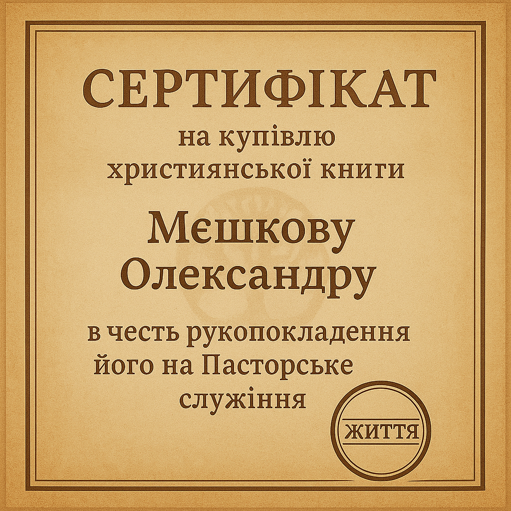

Книга Побажань
Нашому Другу і Пастору Олександру Мешкову
Три питання
Відповідайте чесно, як ви це вмієте.
1. Яка найбільша спокуса для пастора?
2. Згідно з 1 Тимофія 5:17, як мають бути вшановані старійшини?
3. Яке пасторське служіння є «достатнім»?
Бібліотека сердець
"Людина, яка вважає пасторське служіння легким життям, знайде, що воно принесе їй важку смерть." - Чарльз Сперджен
"Проповідуй Христа, і Христа, і Христа, і Христа — і нікого іншого, окрім Христа." - Чарльз Сперджен
"Саша, дякуємо Богові, що знаємо тебе. Бажаємо, щоб Господь зміцнював і благословляв тебе в цьому служінні так, щоб ти став благословенням для багатьох." - Сім'я Григорʼєвих
Сертифікат
Цей сертифікат на суму 1000грн є подарунком від Сімї Григорʼєвих.
З любов'ю від спільноти